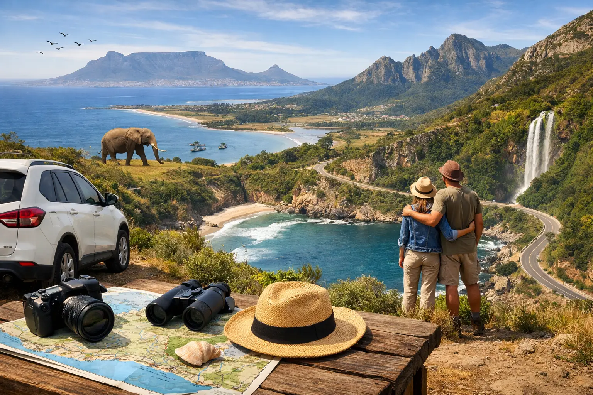

Garden Route Tours Worth Taking From Cape Town

A Garden Route trip is not a quick out-and-back sightseeing day. It is the stretch of South Africa where a morning can begin above an ocean cliff, move through indigenous forest by lunchtime, and end with elephants, ostriches, or a sunset over a quiet lagoon. The best Garden Route tours turn those big distances into a relaxed, well-paced journey, with the driving, hotel coordination, and daily timing properly handled.
For visitors based in Cape Town, the route is especially rewarding when you have several days available and want more than a single attraction. You are traveling through changing landscapes, from coastal towns and mountain passes to vineyard country, semi-desert scenery, and wildlife reserves. A guided or private tour lets you spend your energy on the views rather than navigation, long-distance driving, fuel stops, and arrival logistics.
What Garden Route Tours Usually Cover
The Garden Route generally refers to the scenic southern coast between Mossel Bay and Storms River, although most multi-day itineraries from Cape Town include the broader travel corridor. That often means traveling east through the Overberg, Route 62, the Little Karoo, Oudtshoorn, Knysna, Plettenberg Bay, and Tsitsikamma before returning to Cape Town by a different route.
The exact shape of the trip depends on your interests. Wildlife travelers may prioritize a private game reserve near Albertinia or Mossel Bay. Families often prefer a balanced route with beaches, animal encounters, short walks, and flexible meal breaks. Couples may build in Knysna lagoon views, Plettenberg Bay, local food, and comfortable overnight stays. Adventure-focused travelers can add hiking, kayaking, ziplining, bungee jumping, or the suspension bridges in Tsitsikamma.
A strong itinerary does not try to do every activity. The distances are real: Cape Town to the Mossel Bay area is typically around four to five hours of driving before stops, while Knysna and Plettenberg Bay lie farther east. Seeing more can sound appealing on paper, but excessive road time can leave a beautiful route feeling rushed.
A Practical 4-Day Garden Route Itinerary
Four days is a smart starting point for first-time visitors. It gives you time to experience the route without turning every day into a long transfer. Five or six days is better if you want a slower pace, a full safari experience, or extra time in Knysna and Tsitsikamma.
Day 1: Cape Town to Oudtshoorn or Mossel Bay
An early hotel pickup in Cape Town allows for a comfortable first day. Your route can travel through the farming towns and mountain scenery of the Overberg, or take Route 62 through the Little Karoo, depending on the overnight plan and preferred stops.
Oudtshoorn is known for its ostrich farms, Cango Caves, and dramatic dry landscapes beneath the Swartberg Mountains. It makes sense for travelers who want a change of scenery before returning to the coast. Mossel Bay is a better fit if you want to reach the ocean sooner, perhaps with a beach walk or coastal dinner after checking in.
This is also a good day for a safari reserve if wildlife is your highest priority. Many reserves offer guided game drives and may have specific arrival times, so transport and the day’s schedule need to be planned around the activity rather than added at the last minute.
Day 2: Wildlife, Wilderness, and Knysna
From the Mossel Bay or Albertinia area, continue toward Wilderness and Knysna. The scenery becomes greener, with lakes, forests, and long views over the Indian Ocean. Wilderness is well suited to a short nature stop, especially for visitors who want photographs and fresh air without committing to a lengthy hike.
Knysna is one of the route’s most popular overnight bases. The town sits beside a lagoon, with the Knysna Heads forming a dramatic entrance to the sea. A well-timed stop at the viewpoint offers one of the region’s signature views, while the waterfront provides an easy place for lunch, shopping, or a relaxed evening meal.
Travelers often ask whether Knysna or Plettenberg Bay is the better overnight choice. Knysna offers more dining and activity options, while Plettenberg Bay has a quieter beach-town feel. There is no wrong answer. It depends on whether you prefer a lively base or more time near the sand and surf.
Day 3: Plettenberg Bay and Tsitsikamma
The drive east from Knysna to Plettenberg Bay is short, so there is time to enjoy the coast rather than simply passing through it. Plettenberg Bay is known for broad beaches, clear water, and seasonal whale sightings. The best months for whales are generally from winter into spring, although wildlife sightings are never guaranteed.
Continue to Tsitsikamma National Park, where the forest meets a rugged coastline. The suspension bridge walk at Storms River Mouth is a standout for many visitors. It is manageable for most active travelers, but the path includes steps and uneven surfaces, so comfortable walking shoes matter.
This is where private Garden Route tours have a real advantage. If your group wants more time on the trail, a lunch stop with a view, or an optional adventure activity, the day can be adjusted around your pace. Shared trips can be excellent value, but they operate to a fixed timetable and may not suit everyone’s preferred stop length.
Day 4: Return to Cape Town
A return day can follow the coastal route west or head inland through different mountain and farming scenery. The drive is long, so it should include planned comfort stops, refreshments, and enough time to arrive at your Cape Town hotel safely in the evening.
For guests flying out after a Garden Route journey, avoid scheduling an international departure too close to the final driving day. Staying in Cape Town for one night before a major flight gives you breathing room if weather, traffic, or a longer-than-expected stop affects the schedule.
Choosing Private or Shared Transport
Private transport is usually the best choice for couples, families, friend groups, and travelers with a specific wish list. You can choose the pickup time, accommodation standard, sightseeing priorities, and pace. It also makes sense when you are traveling with luggage, children, older family members, or camera equipment that you do not want to move constantly.
Shared Garden Route tours can offer a more social and budget-conscious option. They work well for solo travelers and visitors who are comfortable following a set route with fellow guests. Before booking, check the maximum group size, hotel pickup area, luggage allowance, included meals, optional activities, and whether accommodation is included or booked separately.
For groups of 20 or more, coordination becomes the main value. A properly organized coach, experienced driver, timed comfort breaks, rooming list support, and clear daily meeting times can make the difference between an enjoyable group trip and a stressful one. Flexi Tours can tailor transport and sightseeing arrangements for private parties, corporate groups, and organized travel groups that need one coordinated plan.
What to Pack and When to Travel
The Garden Route has a mild coastal climate, but conditions can change quickly. Pack layers, a light waterproof jacket, sunscreen, sunglasses, a swimsuit, and walking shoes with grip. Even in warmer months, the early morning can feel cool, especially during a game drive or along an exposed coastal viewpoint.
Summer, from December through February, brings warm weather and busy holiday periods. Book popular accommodations and activities well ahead. Autumn and spring are excellent for comfortable road travel and fewer crowds, while winter can bring green landscapes, moody coastal views, and whale-watching opportunities. Rain is possible at any time, particularly near Tsitsikamma, so flexibility helps.
Build the Route Around the Moments You Care About
The Garden Route rewards travelers who leave room for the unplanned photo stop, the extra ten minutes at a lookout, and the conversation with a local guide who knows why one road is better than another. Choose a route with realistic driving times, comfortable overnight stops, and a guide or driver who can keep the practical details moving. That leaves you free to enjoy the part you came for: South Africa at its most varied, one memorable stop at a time.
Planning this trip?
Tell us your dates and we will put a day together for you.